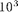
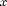
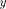
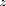
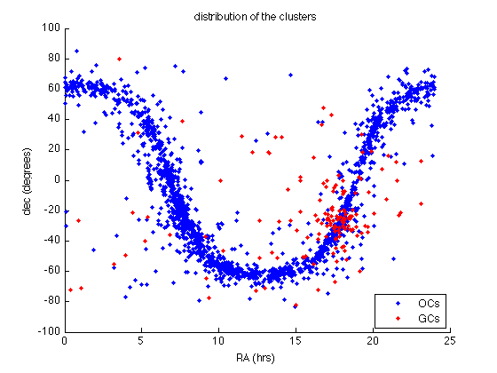
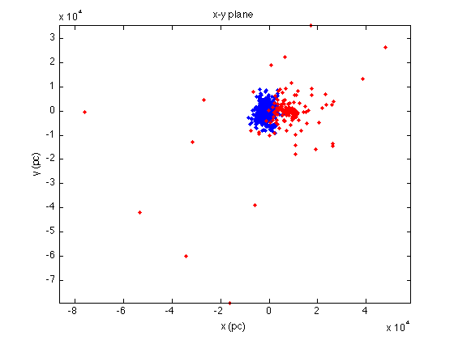
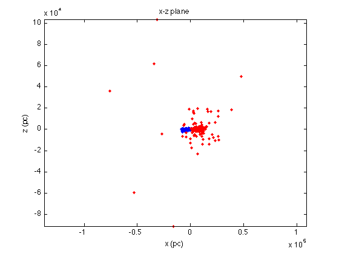
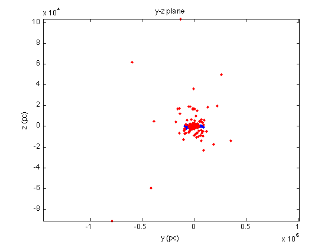

Shape of the Milky Way, Reloaded
This is a reference for you to see if you did everything correctly, what should be on your screen. Note that some commands in this page are blocked (using ...) for you to figure out by yourself.
Contents
Read and organize the data
Now we load an analagous table of data for globular clusters and plot them in the same plane projections as we did for the open clusters.
Load the data and save them to a variable, e.g., galGC:
galGC = load('mwgc_short_relevant.txt');
Change from degrees to radians:
lonGC = galGC(:,1).*2*pi/360.0; latGC = galGC(:,2).*2*pi/360.0;
This time distance is tabulated in kpc, so we must multiply by  to convert from polar (galactic) to cartesian coordinates (, , ):
xgc = 1000.*galGC(:,3).*cos(latGC).*cos(lonGC); ygc = 1000.*galGC(:,3).*cos(latGC).*sin(lonGC); zgc = 1000.*galGC(:,3).*sin(latGC);
Make the plots
Let's plot the projections of the open clusters in blue, and the globular clusters in red:
figure(5); clf plot(xoc,yoc, 'b.') hold on plot(xgc,ygc, 'r.') xlabel('x (pc)') ylabel('y (pc)') title('x-y plane')
figure(6); clf plot(xoc,zoc, 'b.') hold on plot(xgc,zgc, 'r.') xlabel('x (pc)') ylabel('z (pc)') title('x-z plane')
figure(7); clf plot(yoc,zoc, 'b.') hold on plot(ygc,zgc, 'r.') xlabel('y (pc)') ylabel('z (pc)') title('y-z plane')
3-D distribution
Or, you can use plot3 function to make a 3-D plot showing the distribution of open clusters in the space:
figure(8); clf plot3(xoc, yoc, zoc, 'bo') hold on plot3(xgc, ygc, zgc, 'ro') grid on axis square xlabel('x (pc)') ylabel('y (pc)') zlabel('z (pc)') title('3-D distribution')
Then use the Rotate 3D icon to change the angle of view:
It is clear that globular clusters are not bound to the plane of the galaxy and trace the dark matter potential well better than open clusters. This picture is also consistent with our knowledge that globular clusters are often much older than open clusters, which much more often form in star-forming regions in the dense planes of galaxies.